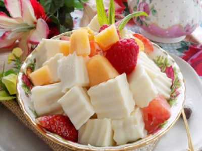

|  |
Food's name: Jelly yogurt▸ Ingredients:
▸ Time to prepare: 45 minutes ▸ Approx quantity: 1 medium bowl |
▸ Detailed recipe:
- You pour fresh milk and condensed milk into a saucepan and simmer until the temperature reaches about 50-60°C. Be careful not to let the milk boil.
- Pour the yogurt into the pot and serve when the yogurt and milk are combined.
- Soak the jelly to dissolve completely and then pour it into the cabinet that has just been prepared.
- Then you scoop milk into prepared boxes or jars. Close the lid and put it in the incubator.
- You can keep it in the yogurt maker for 5-8 hours. If you do not have a yogurt maker, you can brew it in a rice cooker using warm water at a temperature of 60-70°C.
- After incubation, you keep the flexible yogurt in the refrigerator to eat gradually.
▸ Calories and related information: